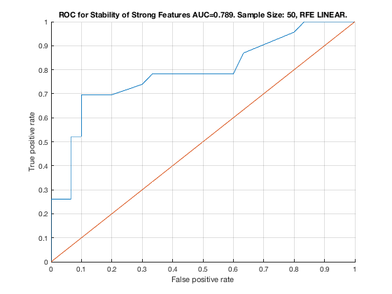

Feature Stability of RFE_LINEAR on TieNet with 50 samples.
unit_stability_type(50, 2, "TieNet")
Figure 14. ROC for Stability of Strong Features AUC=0.874. Sample Size: 50, RFE LINEAR. ________________________________________________________________________________________
Table 14. Feature Stability of RFE LINEAR on TieNet with 50 samples.
_____________________________________________________________________
SELECTED COUNTS: Strong=23, Weak=25, Irrelevant=4
TOTAL COUNTS: Strong=23, Weak=26, Irrelevant=4
Feature_Number Stability Type Path_Length N_MBS Equivalence
______________ _________ ____________ ___________ _____ ___________
22 ' 0.248 ' ' STRONG ' 2 0 21
18 ' 0.224 ' ' STRONG ' 1 0 18
21 ' 0.218 ' ' STRONG ' 1 0 21
23 ' 0.212 ' ' STRONG ' 3 0 21
19 ' 0.208 ' ' STRONG ' 2 0 18
20 ' 0.206 ' ' STRONG ' 3 0 18
40 ' 0.072 ' ' weak ' 3 0 40
39 ' 0.068 ' ' weak ' 4 0 39
7 ' 0.056 ' ' STRONG ' 1 0 7
8 ' 0.052 ' ' STRONG ' 2 0 7
10 ' 0.052 ' ' STRONG ' 4 0 7
9 ' 0.050 ' ' STRONG ' 3 0 7
11 ' 0.048 ' ' STRONG ' 4 0 7
1 ' 0.046 ' ' STRONG ' 1 0 1
5 ' 0.042 ' ' STRONG ' 3 0 1
2 ' 0.040 ' ' STRONG ' 2 0 1
4 ' 0.038 ' ' STRONG ' 4 0 1
28 ' 0.036 ' ' weak ' 5 0 28
3 ' 0.034 ' ' STRONG ' 4 0 1
51 ' 0.028 ' ' weak ' 4 0 51
14 ' 0.026 ' ' STRONG ' 3 225 12
33 ' 0.024 ' ' weak ' 8 225 33
6 ' 0.022 ' ' STRONG ' 3 270 1
12 ' 0.020 ' ' STRONG ' 1 540 12
26 ' 0.020 ' ' weak ' 5 540 26
49 ' 0.020 ' ' weak ' 6 540 49
25 ' 0.016 ' ' weak ' 6 540 25
46 ' 0.016 ' ' weak ' 7 540 46
53 ' 0.016 ' ' weak ' 5 540 53
13 ' 0.014 ' ' STRONG ' 2 810 12
15 ' 0.014 ' ' STRONG ' 3 1080 12
16 ' 0.014 ' ' STRONG ' 2 1350 12
17 ' 0.014 ' ' STRONG ' 4 1620 12
27 ' 0.014 ' ' weak ' 6 1620 27
37 ' 0.014 ' ' weak ' 6 1620 37
38 ' 0.014 ' ' weak ' 5 1620 38
45 ' 0.014 ' ' weak ' 7 1620 45
32 ' 0.010 ' ' weak ' 8 1620 32
35 ' 0.010 ' ' weak ' 7 1620 35
36 ' 0.010 ' ' weak ' 8 1620 36
42 ' 0.010 ' 'irrelevant' Inf 1620 42
24 ' 0.008 ' ' weak ' 4 1620 24
47 ' 0.008 ' 'irrelevant' Inf 1620 47
29 ' 0.006 ' ' weak ' 11 1620 29
31 ' 0.006 ' ' weak ' 9 1620 31
34 ' 0.006 ' ' weak ' 8 1620 34
43 ' 0.006 ' 'irrelevant' Inf 1620 43
52 ' 0.006 ' ' weak ' 4 1620 52
48 ' 0.004 ' ' weak ' 6 1620 48
50 ' 0.004 ' ' weak ' 5 1620 50
41 ' 0.002 ' ' weak ' 3 1620 41
44 ' 0.002 ' 'irrelevant' Inf 1620 44